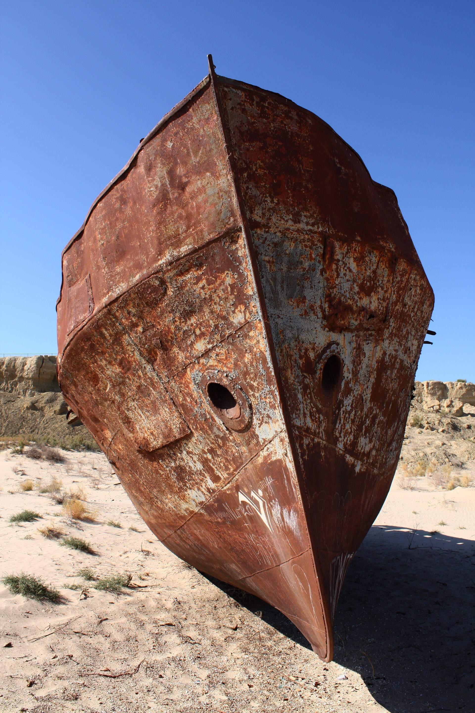

Mirziyoyev: water scarcity is an increasingly serious constraint on Central Asia's development
At the 8th Consultative Meeting in Avaza, the president of Uzbekistan called for regional cooperation on water and climate: digital monitoring, modernised irrigation, water-saving technologies, chairmanship of the Aral Sea fund, and dialogue with Afghanistan.

President of Uzbekistan Shavkat Mirziyoyev said that water scarcity is becoming an increasingly serious constraint on the development of Central Asia, and called on the region's countries to jointly address water and climate challenges.
He spoke on 8 October 2026 at the 8th Consultative Meeting of the Heads of State of Central Asia and Azerbaijan, held in Avaza, Turkmenistan. The meeting brought together the leaders of Uzbekistan, Kazakhstan, Kyrgyzstan, Tajikistan and Turkmenistan, and the president of Azerbaijan.
Water losses and solutions
According to the president, significant water losses are today costing the region far too much. He proposed introducing modern digital monitoring systems to better understand how much water is available and how it is used, modernising irrigation networks and widely adopting water-saving technologies. He also stressed the importance of fully implementing the joint initiative on the Decade of Practical Action for the Rational Use of Water Resources in Central Asia.
Aral Sea fund
Mirziyoyev announced that from next year Uzbekistan will assume the chairmanship of the International Fund for Saving the Aral Sea (IFAS). During the chairmanship, Uzbekistan intends to make the fund's work more effective, launch new environmental projects and attract additional funding.
Dialogue with Afghanistan
The president said particular attention should be paid to dialogue with Afghanistan on the use of water resources — a dialogue that should be continuous and substantive and take into account the interests of all countries in the region. Experts warn that Afghanistan's 285 km Qosh Tepa Canal, if fully operational by 2028, could draw up to 10 cubic kilometres of water per year from the Amu Darya — roughly a third of its flow. In spring 2025, Uzbekistan and Afghanistan signed an agreement on the joint management of water resources in the Amu Darya basin.
Air pollution
Mirziyoyev identified air pollution as one of the region's pressing problems and proposed establishing an International Consortium 'Clean Air of Central Asia,' including a pilot environmental modernisation programme for industrial zones and transport hubs.
Why it matters
In Uzbekistan almost 90% of fresh water goes to agriculture — well above the global average of about 65% — and water use per hectare is 2–2.5 times higher than in technologically advanced countries. The country's total water deficit currently stands at about 3 billion m³ and, by estimates, could rise to 7 billion m³ by 2030 and 15 billion m³ by 2050. Over the past 50–60 years the region's glacier area has shrunk by about 30%. More than 82 million people in Central Asia rely on shared water resources.